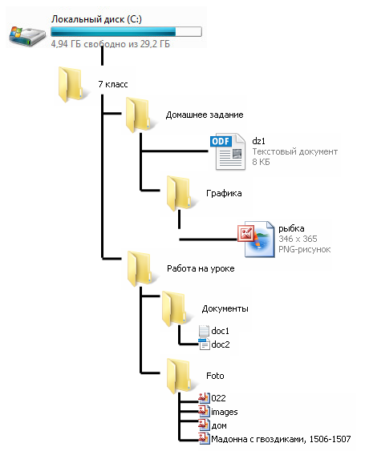

Основные элементы файловой системы
Нужная нам информация хранится в компьютере в виде файлов. Работа с ними производится с помощью файловой системы .
Файловая система
система предназначена для организации выполнения операций над файлами и папками (каталогами). Объектами любой файловой системы являются файлы, папки и диски.Структура файловой системы Windows представляет собой систему вложенных папок . В каждой папке могут храниться другие папки и файлы. О папках или файлах, находящихся в другой папке, говорят, что они вложены в эту папку. Структуры, построенные на принципах вложенности (подчинения), называются иерархическими . Файловая система ОС Windows является иерархической.

Файловая система позволяет создавать, переименовывать и удалять файлы, переносить и копировать файлы с одного носителя на другой, искать файлы, хранящиеся на разных носителях, запускать программы на выполнение. Одни папки создает пользователь, другие, такие как Мой компьютер или Корзина, создаются автоматически при установке операционной системы. Чтобы найти файл в файловой структуре, нужно указать путь к файлу.
Путь к файлу
— последовательность папок, начиная от самой верхней и заканчивая той, в которой непосредственно хранится файл. Путь к файлу вместе с именем файла называют полным именем файла .Путь начинается с корневой папки (имени диска) и содержит последовательность имен папок, в которые вложен файл. Диски именуются большими буквами английского алфавита с двоеточием после буквы. Имена дисков начинаются с C:. После имени каждой папки ставится обратный слэш, например: "C:\Windows\System32\calc.exe"